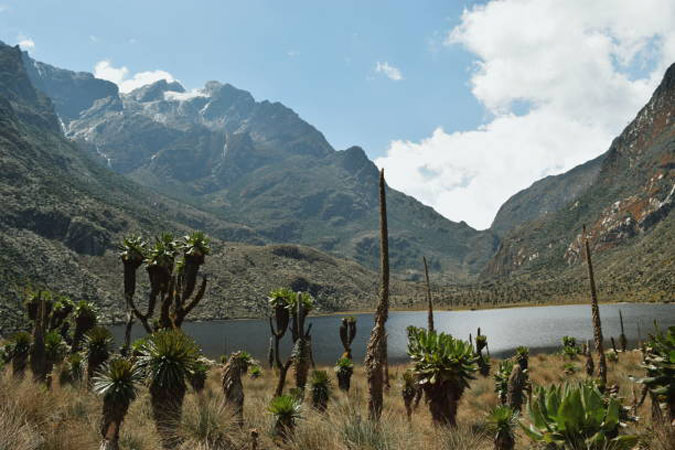
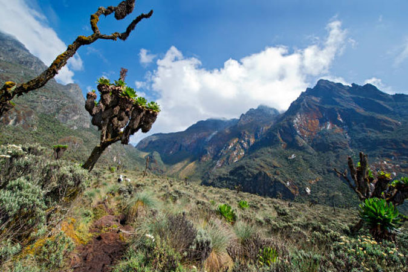
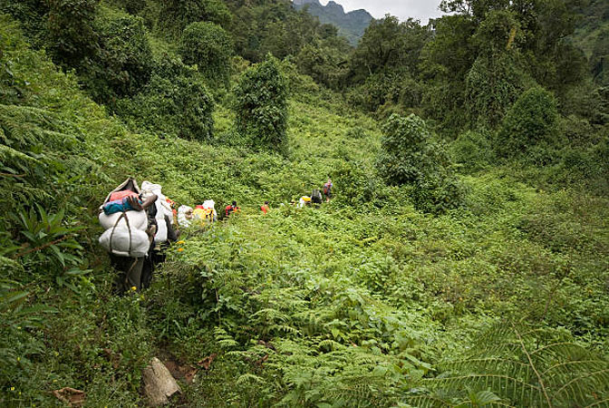

Five (5) Days Mountain Rwenzori hiking
This trekking & Climbing is for speedy and strong travelers that can make it to the peak of Mountain Rwenzori us
ing the Rwenzori Mountains Central Circuit, to explore the various peaks. This hike takes you up to the top of Mo
unt Stanley in the fastest way possible. This hike can only be done by mountaineers who are healthy, strong, and
fast and fit because you will be moving fast and covering long distances each day.
Arrival
You’ll be picked up from the airport (or hotel) by our driver
Accommodation before the tour departs can be arranged for extra cost
Accommodation option:
Hotel Margherita (Midrange)
Rwenzori Base Mountain Camp

Trip Summary
Day 1:Nyakalengija (1600m) to John matte hut (3420m)
Day 2:John matte to Elena hut (4563m)
Day 3:Elena to Bujuku camp (3930m) – Hiking to the top
Day 4:Bujuku to Nyabitaba hut (2660m)
Day 5:Nyabitaba back to Nyakalengija

Day 1: Nyakalengija (1600m) to John matte hut (3420m)
With this you will go to Rwenzori to start your 5 Day Mountain Rwenzori Hiking in Nyakalengija at the head offic
e where you will be briefed and then pick your hiking equipment. The guides and porters will be ready and you wil
l start the hike passing through the local settlements, tropical forests, montane forests, bamboo forest and part
of the alpine.
As you hike, you will have a stopover at Nyabitaba hut for lunch and then proceed through the Kur
t Schaffer Bridge, which is at the conference of Mubuku and Bujuku Rivers. You will then reach john matte where
you will have dinner and spend the night.
DAY 2: John matte to Elena hut (4563m)
After breakfast at John matte, you will pass through the rocky and slippery area as you cross-different rivers and
stream. Along this route, you will spot where you will be able to spot the Margherita and Alexandra peaks at a distance.
You will then proceed with the hike through the lower bigo bog where boards were put to make movement easier,
you will spot various plants like giant lobelia, groundsels, and everlasting flowers among others. You will conti
nue to hike through the rocky parts of mount Stanley to Elena hut where you will have dinner and spend the night.
Day 3: Elena to Bujuku camp (3930m) – Hiking to the top
On this day you will start the hike at around 2am, get ready with your hiking gear and headlamps, you will hike
through the rocky area, and you will use the ropes as you hike on some spots to the Stanley glacier. You will ne
ed your crampons.
After the Stanley glacier, you will remove the crampons and continue with the hike through the rocks to the Ma
rgherita glacier. The hike through the Margherita glacier will lead you to Margherita peak, which is the highest p
oint of the Rwenzori. You will then descend back to Elena hut where you will rest and have lunch. And then continu
e to descend to Bujuku hut where you will have dinner and spend the night.
Day 4: Bujuku to Nyabitaba hut (2660m)
After breakfast at Bujuku you will move through the upper bigo bog, continue descending through the lower bigo b
og to john matte where you will rest and have lunch. You will then proceed to Nyabitaba hut where you will have d
inner and spend the night.
Day 5: Nyabitaba back to Nyakalengija
After breakfast at Nyabitaba, you will descend back to Nyakalengija. You will descend to Nyabitaba through the ba
mboo forests. The path down can be slippery and muddy with little to hold on to and requires careful balancing ove
r the vertical mud or steep rock. After about 5 hours of trekking you will reach Nyabitaba hut where you will have
a stopover for lunch. You will then continue to descend for more 3 hours to Nyakalengija.
Upon arrival at Nyakengija in the late evening, you may drive back to kampala or plan an overnight stay i
n Kasese town, or go for other safari add on like gorilla trekking in Bwindi Impenetrable forest national park o
r return back to Kampala to end your 5 Day Mountain Rwenzori Hiking experience.
Additional accommodation can be arranged for extra cost. You’ll be dropped off at the airport (or hotel).
Take Note
Small Group Safari: Max 6 People per group
Tour Can Depart any day
Tour can be customized
Solo travelers can join this tour
Age Limit: 15 years and above

Safari Booking Quotation
Inclusions
Park fees
Accommodation
A professional driver/guide
Transport to and from
All transportation
All Taxes/VAT
Meals
Drinking water and fruits
Excludes
International flights
Additional accommodation before and at the end of the tour
Tips and Visa
Personal items
Government imposed increase of taxes and or park fees
Book Now